The convolution theorem suggest a different way of computing
a b for
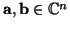; as the inverse transform of
b for
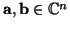; as the inverse transform of
 .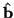. In other words, we first compute the discrete
Fourier transforms of
a and b, then compute the pointwise
product
.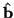. In other words, we first compute the discrete
Fourier transforms of
a and b, then compute the pointwise
product
 ., and finally compute the inverse discrete
Fourier transform to obtain
a
., and finally compute the inverse discrete
Fourier transform to obtain
a b. However, the obvious way
to calculate the discrete Fourier transform, using
equation 6.2 involves n multiplications for each of the n
terms. Thus two transforms, a pointwise product and and an inverse
transform total 3n2 + n multiplications, as opposed to the n2
multiplications needed to do the convolution directly. We discuss in
this section an algorithm which makes the computation of the Fourier
transform very much more efficient, reducing the calculations
from one of order n2 to one of order n log n. This arrangement
of the calculation is known as the fast Fourier transform or
FFT. The algorithm was brought to the attention of many
people by Cooley and Tukey (1965), although
as often happens it appears to have been discovered a number of times
before that, with the idea going back to Gauss! There are
now many variants; a good reference for both these and for code itself
is
(Press et al., 1992, Chapter 12). The common
feature is that the length of the vector should factor into a product
of a large number of small primes; a very efficient version is when
the image size is a power of two, and we present this.
b. However, the obvious way
to calculate the discrete Fourier transform, using
equation 6.2 involves n multiplications for each of the n
terms. Thus two transforms, a pointwise product and and an inverse
transform total 3n2 + n multiplications, as opposed to the n2
multiplications needed to do the convolution directly. We discuss in
this section an algorithm which makes the computation of the Fourier
transform very much more efficient, reducing the calculations
from one of order n2 to one of order n log n. This arrangement
of the calculation is known as the fast Fourier transform or
FFT. The algorithm was brought to the attention of many
people by Cooley and Tukey (1965), although
as often happens it appears to have been discovered a number of times
before that, with the idea going back to Gauss! There are
now many variants; a good reference for both these and for code itself
is
(Press et al., 1992, Chapter 12). The common
feature is that the length of the vector should factor into a product
of a large number of small primes; a very efficient version is when
the image size is a power of two, and we present this.
Assume then we are calculating the Fourier transform of a vector of
length n = 2m, so
m = log2(n). To concentrate on essentials,
we ignore the normalising factor. Write
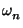=exp-2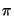i/n to emphasise the underlying image
size. Then
(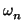)n = 1 and, since n = 2m, we have
n = 2.2m - 1 = 2n1 for m 1. We have
1. We have
| Fp | = 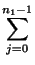f2j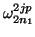 + f2j + 1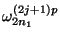, | |
| = f2j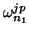 + f2j + 1 |
We consider this sum in more detail. Suppose first that
0 p < n1. Then we can rewrite this as
p < n1. Then we can rewrite this as
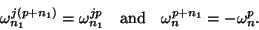
Thus we have